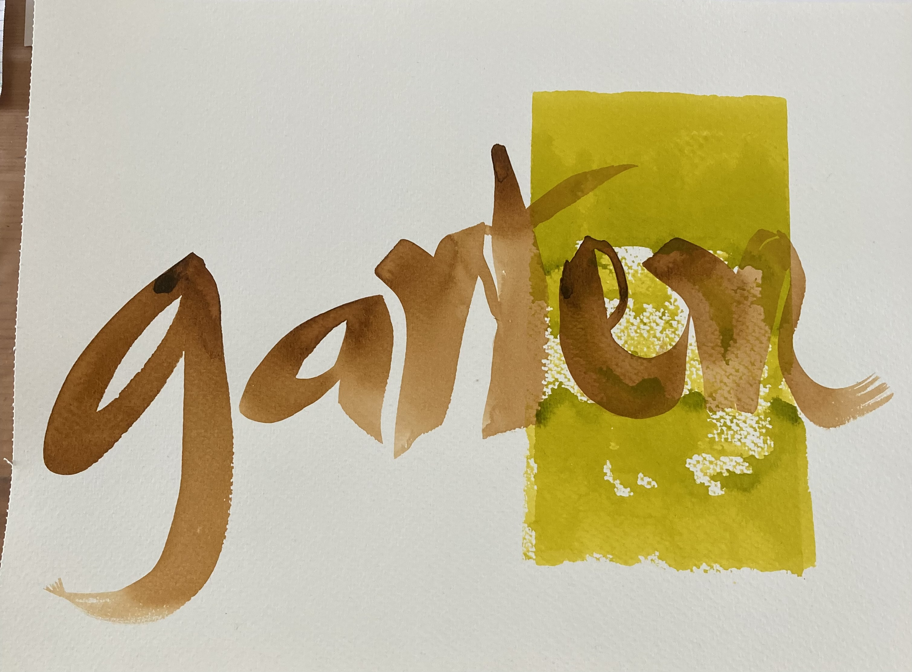
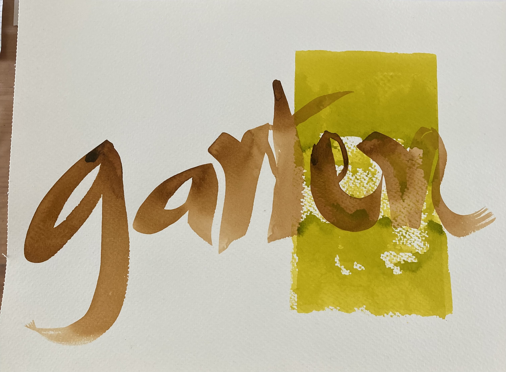

Tauche mit mir ein in die Welt der Wildpflanzen
AnmeldenSommer-Special: Mädesüß-Wanderung & Limonade-Workshop
Entdecken Sie mit mir die Königin des Sommers: den Mädesüß! In diesem Special lade ich Sie ein, diese duftende Pflanze zu finden und zu erkennen. Nach unserer Wanderung stellen wir gemeinsam eine erfrischende Mädesüß-Limonade her.
- Geführte Wildpflanzen-Wanderung
- Wissenswertes zur Pflanze und ihrer Heilkraft
- Gemeinsame Zubereitung von Limonade und andere Produkte
Sichern Sie sich jetzt Ihren Platz!


 
